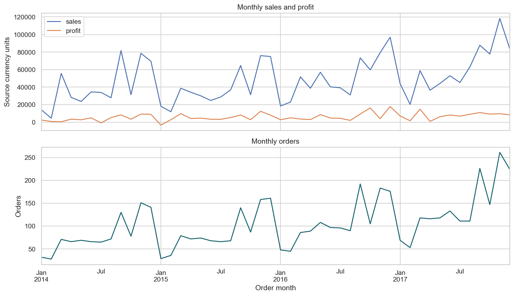
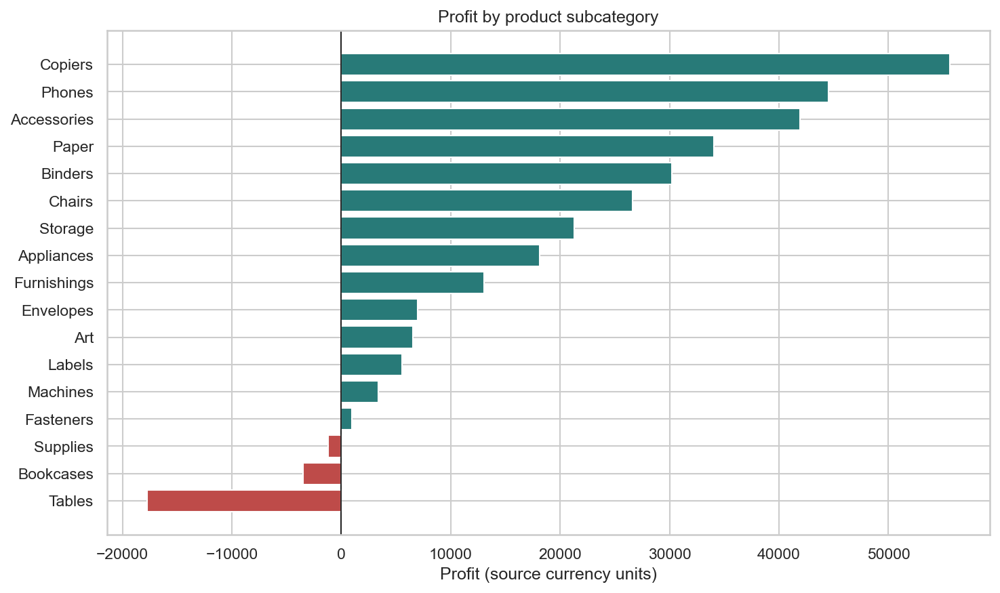

Open the complete executed analysis · View the GitHub project
Executive report: customer, order and return analysis
Scope and decision context
The extract covers 2014-01-03 to 2017-12-30. It contains 9,994 order lines, 5,009 orders and 793 purchasing customers. Monetary figures are in the source's unspecified currency units. These are historical results, not current performance.
Main findings
- Sales: 2,297,200.86; recorded profit: 286,397.02; aggregate margin: 12.47%. Customer-cluster bootstrap 95% margin interval: 10.56%–14.34%; this describes sampling uncertainty under the stated assumptions, not forecasting uncertainty.
- The subcategory with the highest observed profit was Copiers (55,617.82); the lowest was Tables (-17,725.48). Investigate product mix, pricing and costs before acting.
- The top fifth of customers by observed sales contributed 48.1% of sales. Concentration may affect planning, but the extract alone does not explain why customers buy.
- 296 of 5,009 orders appeared in the returns file (5.91%). This is an order-level indicator, not a refund value or line-level return rate.
- Segment and return association: Cramér's V 0.011; customer-cluster permutation p-value 0.7280. This is exploratory, dependent on recorded labels and cannot establish cause.
Actions by team
- Commercial and category managers: review the lowest-profit subcategories and discount bands alongside volume and customer mix; test changes in a controlled pilot.
- Finance: validate currency, definitions of sales and profit, and the accounting treatment and amount of returns before using the totals for financial reporting.
- Operations and customer experience: review the return process and record return dates, reasons, affected lines and refunded amounts.
- Data team: add a reliable order-location key, retain time-stamped order and return events, and document the reporting extract and label-maturity rules.
Prediction prototype
Selected on 2016 validation: random_forest. Tested on the later 2017 holdout: average precision 0.114 versus observed return prevalence 0.062; ROC AUC 0.641; Brier score 0.057. Among the 169 highest-ranked orders (about 10%), precision was 15.4% and recall 24.8%. Ranking ties, cost of review and calibration matter; these results do not establish business value.
Limitations
No return-event date or outcome-maturity window is supplied; model evaluation may include immature or unavailable labels. The customer table has multiple location records for many customers and no order-location key. The return file identifies orders, not returned items or refunds. Observational patterns are not causal. Customer and product records may be incomplete outside the extract. Review data rights and all outputs before public sharing.
Supporting visuals

